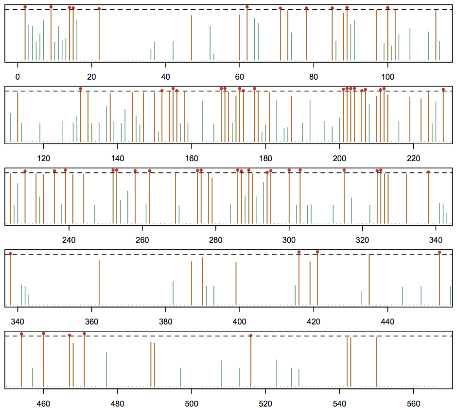

Install Java: The program requires a recent version of the Java Runtime (JRE), which, if not already installed, can be downloaded from Oracle. Linux packages are usually available in the distribution's repository (e.g. sudo apt-get install openjdk-7-jre for Debian, Ubuntu etc. distributions).
Download the program: The latest version of the program is available for download from the repository. The download includes a compiled binary as well as a build.xml to compile from sources using ant. Unzip the download and check that the program works:
$ ls -F
README.md build.xml dist/ etc/ lib/ src/
$ java -cp dist/tdg09.jar tdg09.Analyse
Usage: java -cp tdg09.jar tdg09.Analyse [options]
Options:
* -alignment
Alignment in PHYLIP format
* -groups
Group labels to partition tree e.g. Av Hu
-threads
Number of threads to use
Default: 1
* -tree
Tree in NEWICK format
Preparing your data: The program requires a protein sequence alignment in PHYLIP format and the corresponding tree in Newick format. The tree branch lengths should be optimised for an amino acid model, such as WAG, using a program such as RAxML or PAML. Most importantly, sequence names must be prefixed by a two-letter identifier that is used to indicate its lineage/grouping. For example, to identify changes in selective constraints between avian and human flu viral proteins, we can prefix every sequence name with 'Av' or 'Hu' to indicate its lineage:
$ cat etc/H1.faa
434 566
Hu_HA_AAX56530_H1N1 MKAKLLVLLCAFTATYADTI...
Hu_HA_AAY78939_H1N2 MKVKLLILLCTFTATYADTI...
Av_HA_ABB19507_H1N6 MEAKLFVLFCTFTVLKADTI...
Av_HA_ABB19518_H1N1 MEAKLFVLFCTFTALKADTI...
...
Both the sequence alignment and the tree must follow this convention.
$ cat etc/H1.tree
((Av_HA_ABB19607_H1N1:0.0852880,Av_HA_ABG88212_H1N1:0.1036700):
0.0248320,((Av_HA_ABB19618_H1N1:...
This is the only way by which the tdg09 program determines which of the different non-homogeneous models a particular tree branch should use. Example data sets of flu viral proteins (used in Tamuri et al. 2009) are included in the etc/ directory.
Running the program: The command-line options for the program are:
- -alignment : the sequence alignment file in PHYLIP format e.g.
etc/H1.faa - -tree : the tree file in Newick format e.g.
etc/H1.tree - -groups : the two-letter identifiers used to partition the sequences e.g.
Av Hu - -threads : specify the numbers of CPU cores/threads to utilise e.g.
2
The program prints messages to standard out, so this should be captured using > or tee. We are now ready to run the program:
$ java -cp dist/tdg09.jar tdg09.Analyse -alignment etc/H1.faa \
-tree etc/H1.tree -groups Av Hu -threads 2 > H1_out.txt
or if you have 'tee' installed:
$ java -cp dist/tdg09.jar tdg09.Analyse -alignment etc/H1.faa \
-tree etc/H1.tree -groups Av Hu -threads 2 | tee H1_out.txt
Inspect the results: In this example, program output is captured in H1_out.txt:
$ cat H1_out.txt
StartTime: 2013-03-19 13:44:10.129
WorkingDirectory: /Users/Tester/Documents/tdg09
Options: -alignment etc/H1.faa -tree etc/H1.tree -groups Av Hu -threads 2
TreeFile: /Users/Tester/Documents/tdg09/etc/H1.tree
AlignmentFile: /Users/Tester/Documents/tdg09/etc/H1.faa
Alignment:
SequenceCount: 434
SiteCount: 566
Groups: [Av, Hu]
# The internal nodes of the tree are not labelled. Labelling...
# Node 432 from [Av, Hu] resolved
# Node 432 from [Av, Hu] resolved
# Assuming that root of tree is in group [Av]
# Switching from group [Av] to [Hu] at branch 432..431
LabelledTree: >
(((((((((((Av_HA_ABB19607_H1N1:0.0852880,Av_HA_ABG88212_H1N1:0.1036700)
Av:0.0248320,((Av_HA_ABB19618_H1N1:0.0910450,Av_HA_ABG88201_H1N1:0.0810480)
...
Hu:0.0618410)Hu:0.0978830)Hu:0.0436020)Hu:0.0482480)Hu:0.0255390)Hu:0.0362960)
Hu:0.0696670)Hu:0.0620790)Hu:0.0268645);
The output contains a "LabelledTree" that shows the inferred lineage for each ancestral node. This should be checked in a tree viewing program (such as Dendroscope) to make sure that the lineages are correct. If not, they can be modified and the analysis can be rerun with the new, custom-labelled, tree. The output continues:
# 2013-03-19 22:44:10.33 - site 1 complete.
# 2013-03-19 22:44:11.366 - site 3 complete.
# 2013-03-19 22:44:11.366 - site 4 complete.
...
LrtResults:
# Site, delta lnL, dof, LRT, FDR
- [ 204, 21.850690, 3, 0.0000000, 0.0000003 ]
- [ 169, 11.528011, 1, 0.0000016, 0.0001542 ]
- [ 289, 10.733096, 2, 0.0000218, 0.0008550 ]
- [ 252, 10.927903, 2, 0.0000180, 0.0008796 ]
- [ 9, 8.225516, 1, 0.0000499, 0.0008895 ]
- [ 300, 15.027774, 5, 0.0000144, 0.0009396 ]
- [ 62, 8.261257, 1, 0.0000481, 0.0009423 ]
- [ 303, 8.261836, 1, 0.0000480, 0.0010463 ]
- [ 239, 9.647869, 2, 0.0000646, 0.0010545 ]
- [ 315, 9.483944, 2, 0.0000761, 0.0011468 ]
- [ 253, 8.262439, 1, 0.0000480, 0.0011764 ]
...
FullResults:
# Site, WAG+ssF params, WAG+ssF lnL, WAG+lssF params, WAG+lssF params, delta lnL, dof, LRT, FDR
- [ 1, NA, NA, NA, NA, NA, NA, NA, NA ]
- [ 2, 3, -21.488149, 5, -13.378828, 8.109321, 2, 0.0003007, 0.0025627 ]
- [ 3, 2, -48.561153, 3, -47.763333, 0.797820, 1, 0.2065223, 0.3489515 ]
- [ 4, 2, -24.137478, 3, -23.407924, 0.729554, 1, 0.2270721, 0.3708845 ]
- [ 5, 2, -12.611075, 3, -12.456865, 0.154209, 1, 0.5786522, 0.6593943 ]
- [ 6, 3, -23.856049, 5, -22.761440, 1.094609, 2, 0.3346706, 0.5084918 ]
- [ 7, 2, -44.839152, 3, -43.761797, 1.077355, 1, 0.1421333, 0.2509740 ]
- [ 8, NA, NA, NA, NA, NA, NA, NA, NA ]
...
Of interest are the "LrtResults" and "FullResults" tables.
The LrtResults lists polymorphic sites (on which the non-homogeneous model was estimated) and orders them by the false discovery rate (a correction on the likelihood ratio test P-value required by multiple hypothesis testing). At a given FDR cutoff (e.g. 0.05), these sites are those at which the non-homogeneous model provides a statistically significant improvement over the homogenous model, indicating that the patterns of substitution are different between the different groups/lineages.
The FullResults table lists further results from all sites. This includes the log-likelihood for the WAG+ssF (site-specific frequencies or homogeneous model) and WAG+lssF (lineage and site-specific frequencies or non-homogeneous model). Conserved locations are not analysed, so their entries are 'NA'. Finally, after the FullResults table, the output file contains details of the per-location results, such as the amino acid frequencies estimated by the ssF and lssF models.
Analysing the results: The output file is in YAML format, which means it can be read by any other programming language that has a YAML parsing library. Here we show an example of analysing the results using the programming language R. The code is available in the src/R/example.R file. Start the R console, install and load the yaml library, then load the output file using the yaml.load_file function:
$ R
R version 2.15.3 (2013-03-01) -- "Security Blanket"
...
> install.packages("yaml")
Installing package(s) into ‘/Users/Tester/Library/R/2.15/library’
(as ‘lib’ is unspecified)
...
> library(yaml)
> out <- yaml.load_file(input='/Users/Tester/Documents/tdg09/H1_out.txt')
> summary(out)
Length Class Mode
StartTime 1 -none- character
WorkingDirectory 1 -none- character
Options 1 -none- character
TreeFile 1 -none- character
AlignmentFile 1 -none- character
Alignment 2 -none- list
Groups 2 -none- character
LabelledTree 1 -none- character
LrtResults 196 -none- list
FullResults 566 -none- list
ConservedPositions 2 -none- list
SiteResults 566 -none- list
EndTime 1 -none- character
To convert the R list objects into a type easier to work with, we convert the LrtResults and FullResults objects into data.frames:
> lrt_results <- as.data.frame(matrix(unlist(out$LrtResults), ncol=5, byrow=T))
> names(lrt_results) <- c("site", "deltaLnL", "dof", "lrt", "fdr")
> head(lrt_results)
site deltaLnL dof lrt fdr
1 204 21.850690 3 0.00e+00 0.0000003
2 169 11.528011 1 1.60e-06 0.0001542
3 289 10.733096 2 2.18e-05 0.0008550
4 252 10.927903 2 1.80e-05 0.0008796
5 9 8.225516 1 4.99e-05 0.0008895
6 300 15.027774 5 1.44e-05 0.0009396
> sum(lrt_results$fdr <= 0.05) # how many sites identified with FDR < 0.05?
[1] 55
> full_results <- as.data.frame(matrix(unlist(out$FullResults), ncol=9, byrow=T))
> names(full_results) <- c("site", "ssfParams", "ssfLnL", "lssfParams", "lssfLnL", "deltaLnL", "dof", "lrt", "fdr")
> head(full_results)
site ssfParams ssfLnL lssfParams lssfLnL deltaLnL dof lrt fdr
1 1 NA NA NA NA NA NA NA NA
2 2 3 -21.488149 5 -13.378828 8.109321 2 0.0003007 0.0025627
3 3 2 -48.561153 3 -47.763333 0.79782 1 0.2065223 0.3489515
4 4 2 -24.137478 3 -23.407924 0.729554 1 0.2270721 0.3708845
5 5 2 -12.611075 3 -12.456865 0.154209 1 0.5786522 0.6593943
6 6 3 -23.856049 5 -22.76144 1.094609 2 0.3346706 0.5084918
To produce a plot of FDR values by site:
> fdr <- as.numeric(levels(full_results$fdr)[full_results$fdr]) # FDR column should be numeric
Warning message:
NAs introduced by coercion
> fdr[is.na(fdr)] <- 1.0 # conserved locations implicitly have no evidence of non-homogeneity
> sites <- out$Alignment$SiteCount
> plot_ranges <- split(seq(1, sites), cut(seq(1, sites), 5)) # split sites in plot into 5 rows
> par(mfrow=c(5,1), mar=c(2.0,0.5,0.5,0.5))
for (p in 1:5) {
plot(1 - fdr,
xlim=c(plot_ranges[[p]][1], tail(plot_ranges[[p]], n=1)),
ty='h', lwd=1, main='', xlab='', ylab='', yaxt='n', col="#1B9E77")
lines(which(fdr <= 0.20), 1 - fdr[fdr <= 0.20], col="#D95F02", ty='h')
abline(h=0.95, lty='dashed')
points(which(fdr <= 0.05), 1 - fdr[fdr <= 0.05], pch=20, col="#DE2D26")
}
This produces the plot show below. Bars drawn in orange indicate locations with FDR < 0.20, and those locations with FDR < 0.05 have a red dot at their value (we drew the plot with "1 - fdr" values so that smaller FDRs are taller). We can see from this plot a cluster of identified sites at locations 200-210.

The R code in src/R/example.R also provides an example of using the phangorn and ape packages to simulate data under the homogeneous model for a particular site. We can then analyse the synthetic data with the TdG09 software, the parametric bootstrap providing significance of the non-homogeneous model on the original data. For example, here is the Monte Carlo distribution of Δ for 1000 parametric bootstrap replicates for flu protein HA (H1) site 204, showing that the homogenous model can be rejected in favour of the non-homogeneous model with P-value < 0.001.